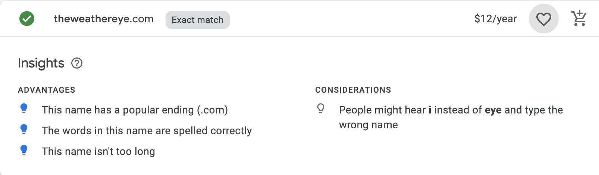

Domain name
Site Purpose
The main purpose of The Weather Eye is to provide advanced weather and storm information on a local, national, and worldwide level. The site will focus on information that is not typical of other weather sites. Users coming to the site will be able to access historical weather data that can help provide a baseline to understand weather trends in a particular area. Though not a primary purpose for the website, current weather details such as 3, 7, and 10 day forecasts are available to those who simply want to check the weather.